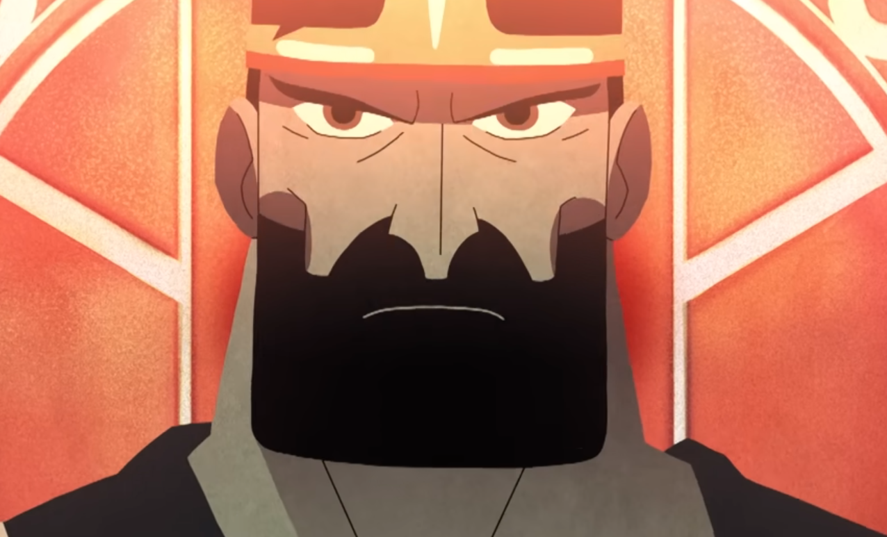

(Image is from Delta by C2C. I'd recommend giving it a watch after this read!)
The people bind together.
Steadfast in their views.
Marching the streets, headed for his palace.
Newspapers litter the ground with headlines designed to captivate.
And what captivates more, than “evil”.
“The king knows no honour!”
“The king fights only for himself!”
“The king needs to die!”
Fatcats and bigwigs, smoking tar-ridden cigars, laughing up high in their offices.
The people can’t see this, no. They only see what they are sold.
The king watches as they march.
His advisors sell him persuasions.
“The people know no honour!”
“The people fight only for themselves!”
“The people need to die!”
But the king does not buy.
He steps out and gets a view of the people.
They are like ants.
He is like a god.
But so too, an ant is a god, among dust and fleas.
The swarm gets closer.
Gunshots ring.
Debris flies.
He does not yield.
Steadfast in his view.
His booming voice cuts through all.
“WHO DO WE HONOUR?”
Bullet grazes flesh.
“WHO DO WE FIGHT FOR?”
Blood drips.
“WHY SHOULD ANYONE HAVE TO DIE?”
The people stop marching.
The fatcats stop laughing.
Blood falls from up high.
And a golden crown falls.